מסוגלות
תרגול והתנסויות המכוונות לפיתוח תחושת מסוגלות לביצוע משימות ועמידה באתגרים הקשורים לעבודת מחנכת הכיתה.
תכנים אלו יתמקדו בתרגול סיטואציות ואירועים ממשיים מחיי היום יום של מחנכת כיתה. באמצעות התנסות, תרגול, משוב והתאמה, המחנכות מפתחות תחושת מסוגלות, מיומנויות פעולה וביטחון בהתמודדות עם אתגרי התפקיד.
תרגול והתנסויות המכוונות לפיתוח תחושת מסוגלות לביצוע משימות ועמידה באתגרים הקשורים לעבודת מחנכת הכיתה.
תרגול ושכלול מגוון מיומנויות וטכניקות חינוך והוראה במסגרת החממה או הסדנה.
מעורבות פעילה והתנסות מעשית במסגרות ומצבים המדמים את סביבת העבודה.
שיקוף פעולות, חוויות והחלטות כדי לזהות מגוון אפשרויות פעולה ולאפשר צמיחה.
הכרה בכך שהתמקצעות דורשת זמן הסתגלות ואימון, כמו גם הקשרים ויכולות נרכשים.
קראו בעיון את התכנים המוצעים והרעיונות ליישום.

למידה גמישה ודינמית המתבססת על הצרכים, האתגרים והמצבים שמחנכות הכיתה מביאות מהשטח בזמן אמת. הדגש הוא על הפיכת אירועים יומיומיים להזדמנות לתרגול, היוועצות, קבלת משוב ופיתוח תחושת מסוגלות.

כל התכנים המופיעים ביסודות האחרים רלוונטיים גם ליסוד זה כאשר הדגש הוא על תרגול התכנים בחממה ובסדנה.
